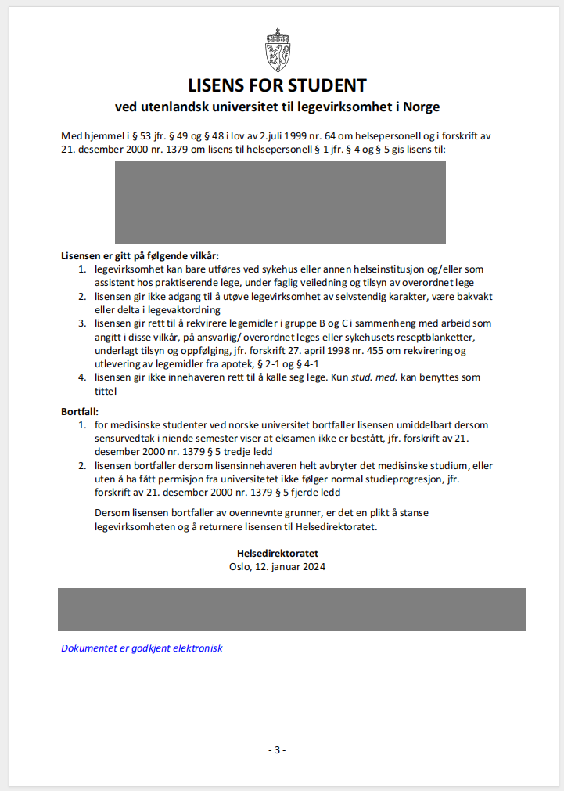

-
ENG

- UA
Aug 31, 2024
Rogaland, Norway - Nov 2023
If you are currently studying in your 5th or 6th year at a medical university, you are eligible to receive a medical student license. This license gives you the right to work in a hospital under the supervision of another doctor.
To obtain it, you need to contact your dean’s office, so that they can provide a certificate that you are currently studying at a medical university and a transcript with hours and grades in subjects. The scans must be in color and no later than three months from the date of application.
Documents must be sent to the Helsedirektoratet via a questionnaire. There you need to fill in information about your university, relevant work experience (there is no such thing if you are a student and have not worked as a doctor) and sign that these are not forged documents. The answer usually comes after about 2 months.
Price: 3,500 NOK.
The license looks like this:

Useful links
Information from the official website with a link to the application form
Дата останньої редакції статті: September 4, 2024